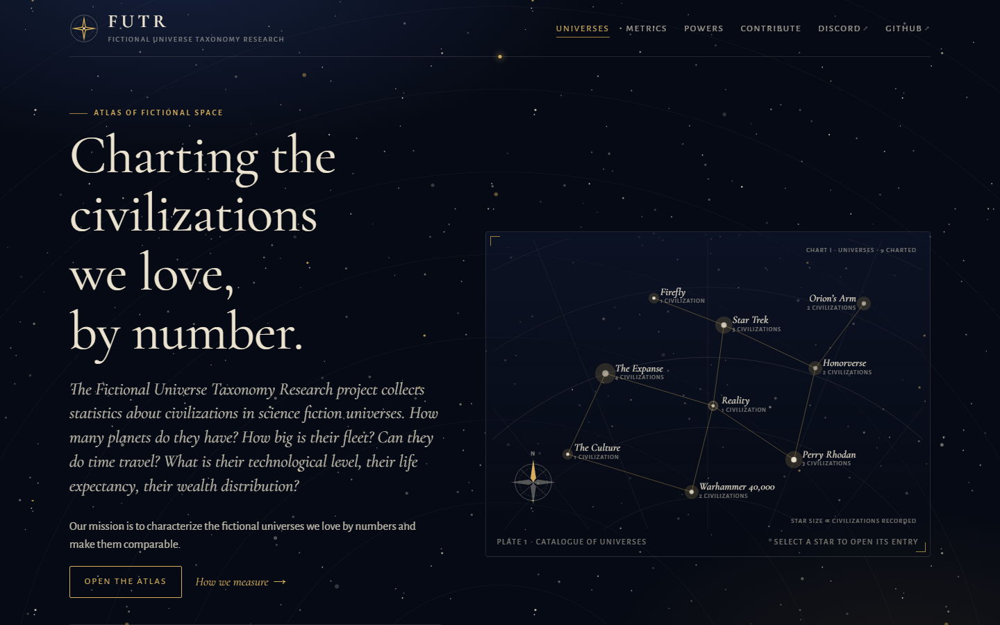
01
Starchart
Astronomical atlas. Universes plotted as stars on a navigational chart, dark navy with gold leaf and serif typography.
Cormorant Garamond · Alegreya SansTwelve start-page concepts (plus two variants) for futr.space. Each folder holds a static homepage plus a Universe page (Honorverse) and a Civilization page (Manticore 1903 PD) in the same design. Content is sample data from data/; all lists are built for a growing catalogue.

Astronomical atlas. Universes plotted as stars on a navigational chart, dark navy with gold leaf and serif typography.
Cormorant Garamond · Alegreya Sans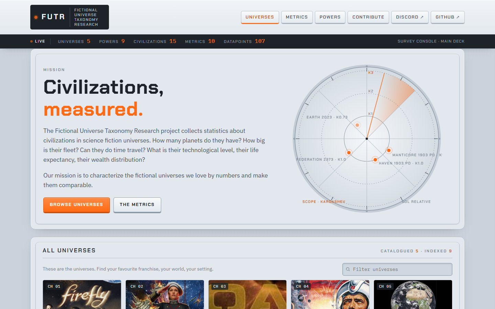
Survey console. Light grey-blue instrument panels, orange accents, gauges and a live counter strip for the data.
Chakra Petch · IBM Plex Sans / Mono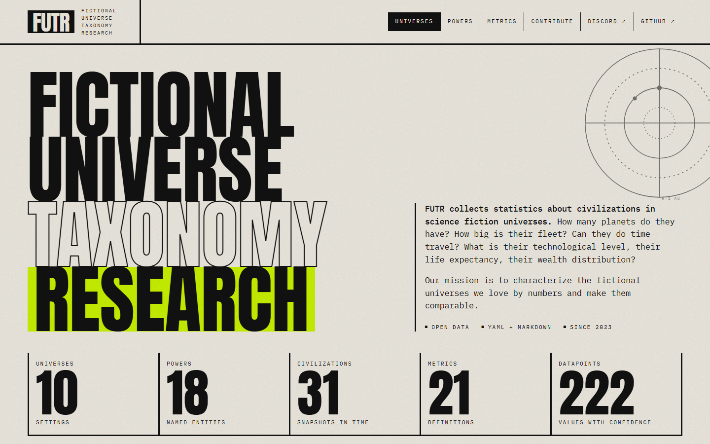
Brutalist typography. Oversized condensed headlines on bone-white, chartreuse highlight, monospace data tables.
Anton · IBM Plex Mono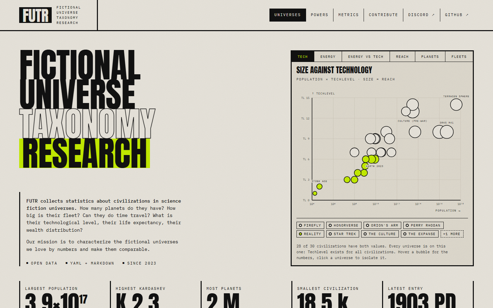
Variant of 03: six switchable plots (tech, energy, reach, planets, fleets) replace the orbit graphic, and a wall of record holders replaces the database counts.
Anton · IBM Plex Mono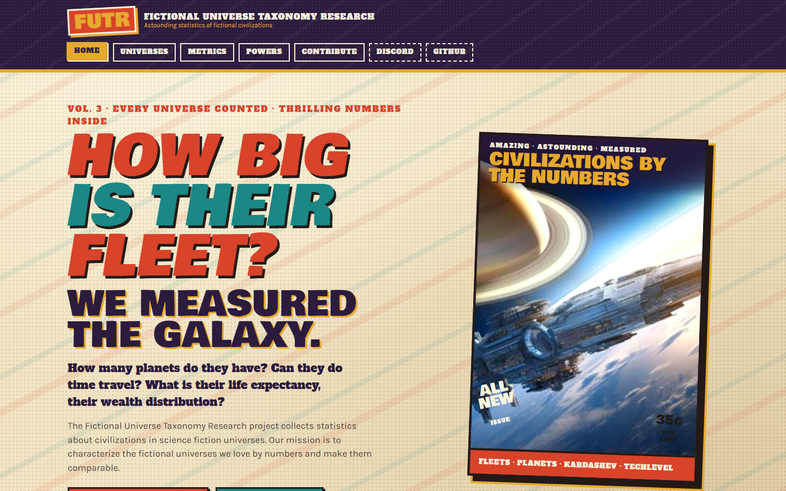
Golden-age pulp magazine. Cream halftone paper, slab headlines, magazine-cover hero and starburst stickers.
Bowlby One · Alfa Slab One · Karla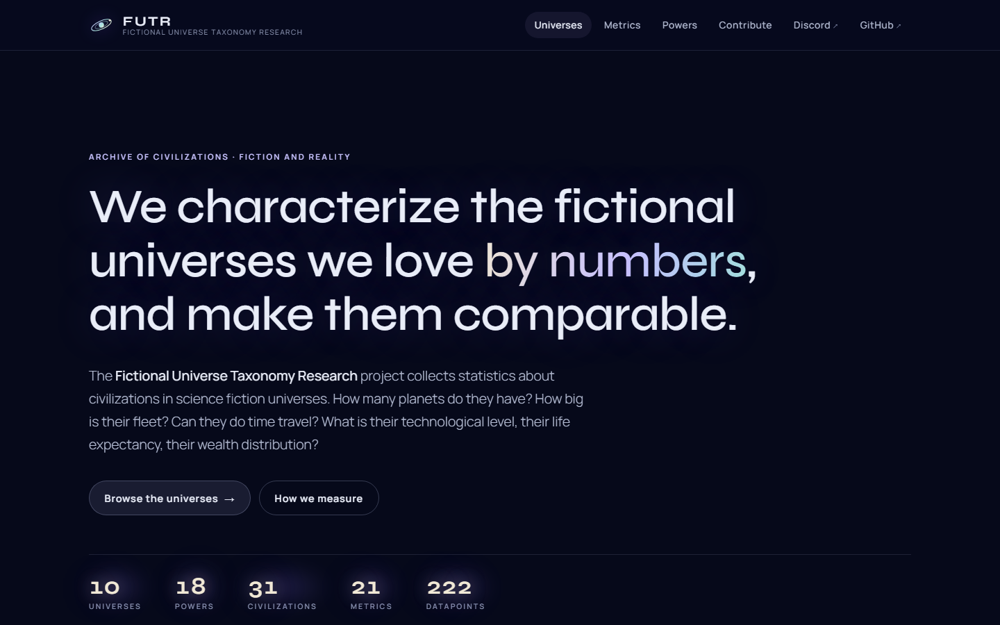
Modern holographic UI. Deep space nebula background, frosted-glass panels, iridescent accents on large geometric type.
Syne · Manrope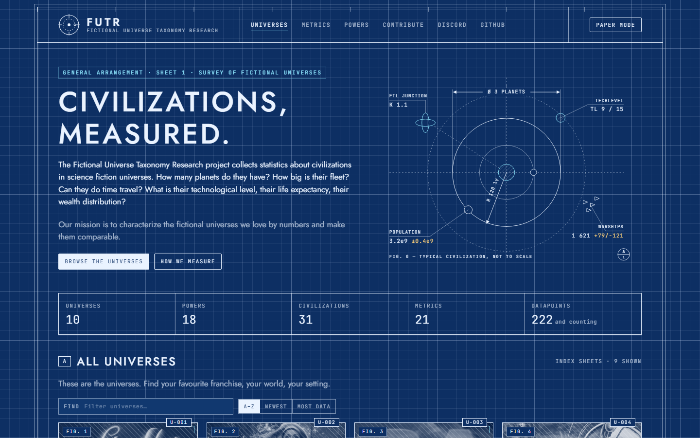
Engineering drawing. Cyanotype grid, dimension lines and callouts, title blocks for each entity. Paper-mode toggle.
Jost · JetBrains Mono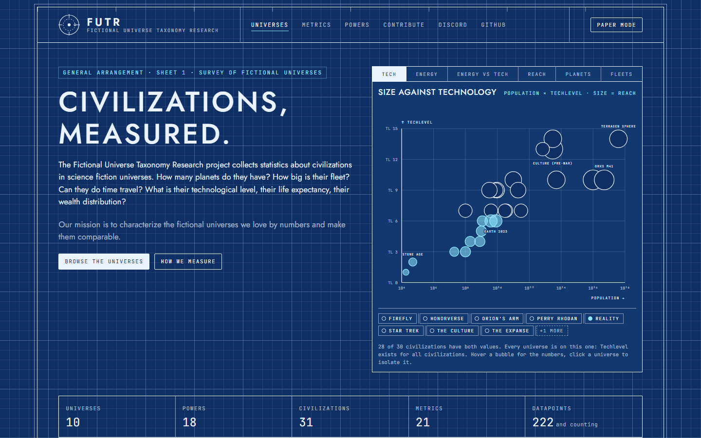
Variant of 06: images keep their original colours like mounted photographs, and the hero drawing is replaced by six switchable plots over all civilizations.
Jost · JetBrains Mono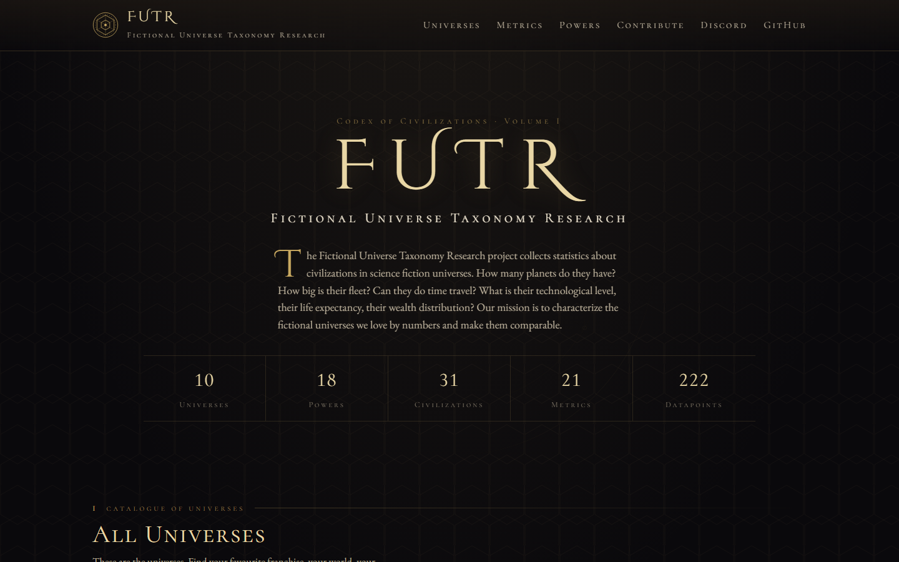
Illuminated encyclopedia. Obsidian and bronze, drop caps, ledger tables, a volume-and-chapter structure for the catalogue.
Cinzel Decorative · Cormorant SC · EB Garamond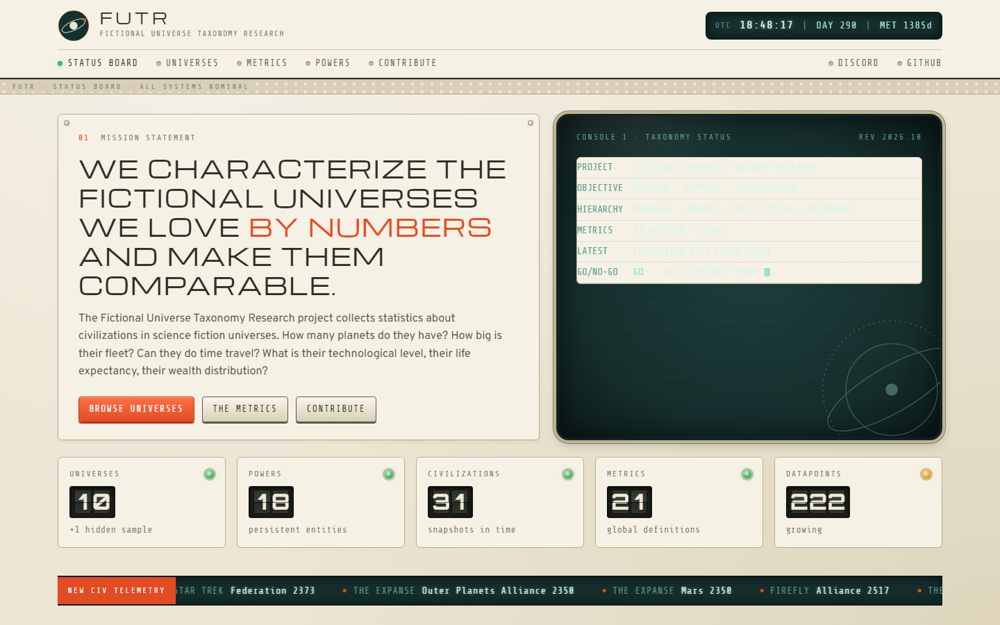
Apollo-era control room. Warm beige consoles, CRT status screen, split-flap counters, mission clock and telemetry ticker.
Michroma · Orbitron · Overpass · Share Tech Mono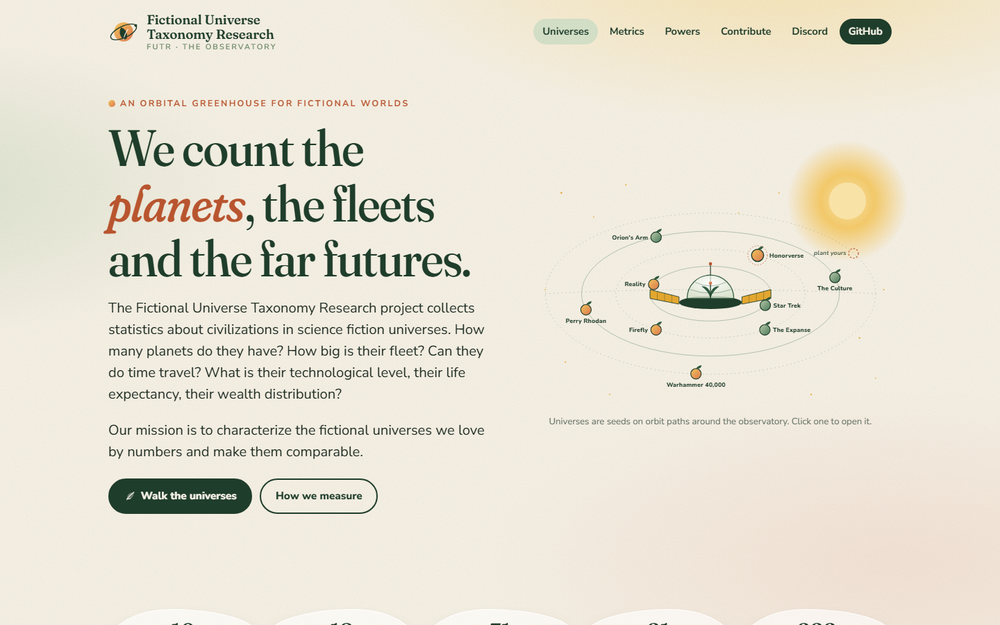
Orbital greenhouse. Light sage and terracotta, soft gradients, universes as seeds on orbit paths around an observatory.
Fraunces · Nunito Sans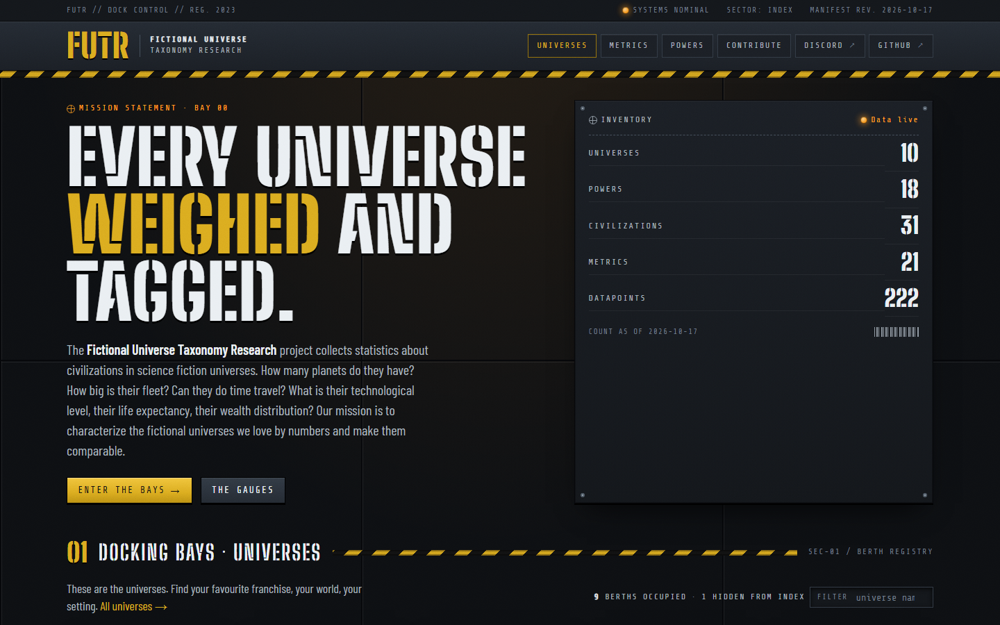
Industrial dockyard. Gunmetal panels, hazard stripes, stencil headlines; universes are docking bays, civilizations are manifests.
Big Shoulders Stencil · Barlow Condensed · Share Tech Mono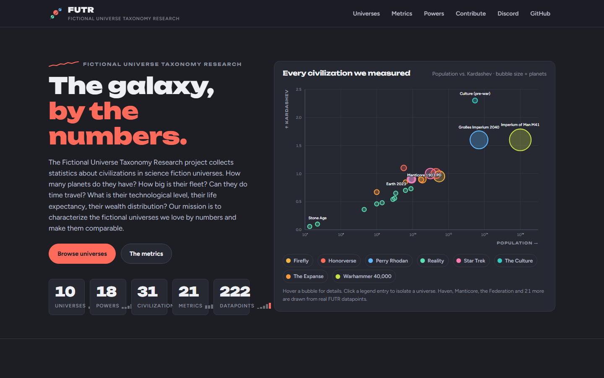
Data journalism. Charcoal canvas, coral accent, an interactive bubble chart of all civilizations as the hero element.
Unbounded · Figtree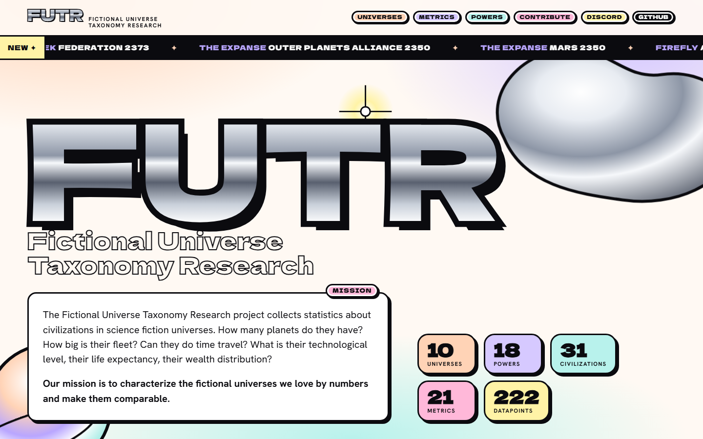
Y2K chrome. Pastel gradients, liquid-metal wordmark, thick outlines and sticker badges, marquee ticker for new entries.
Dela Gothic One · Hanken Grotesk